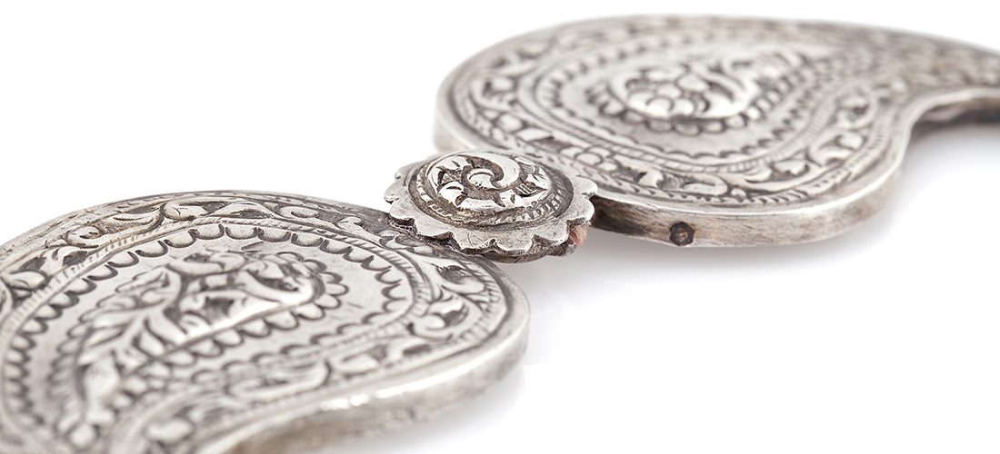
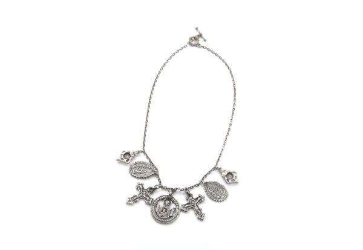
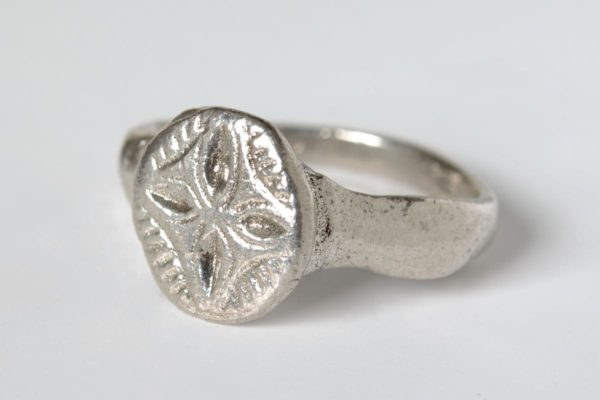
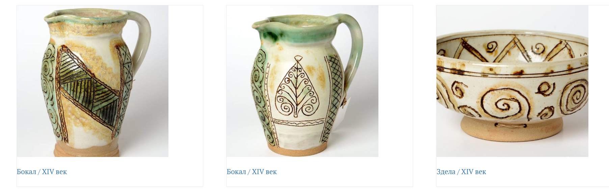
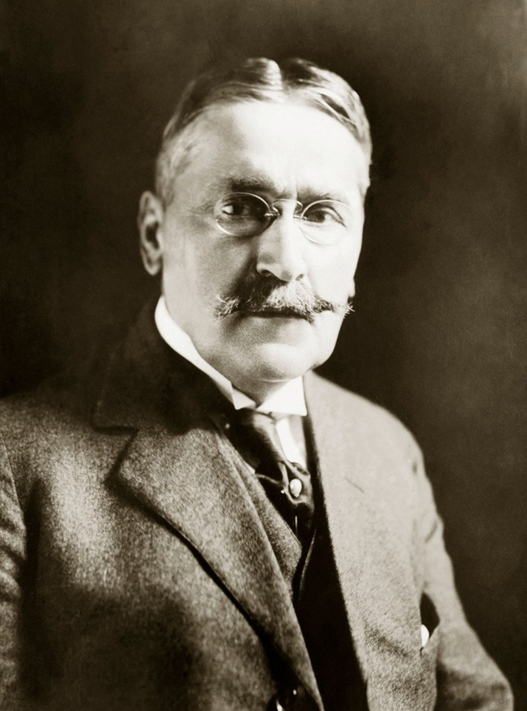
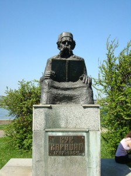
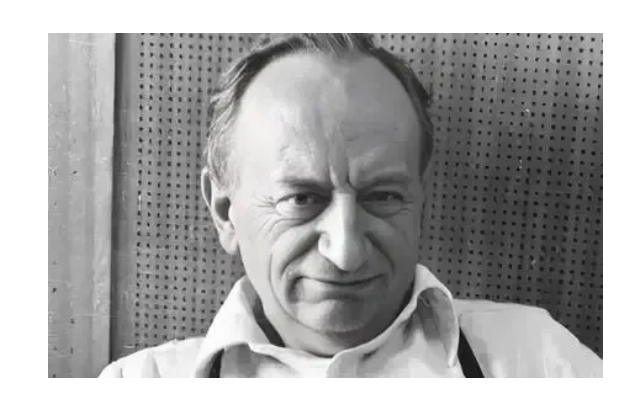
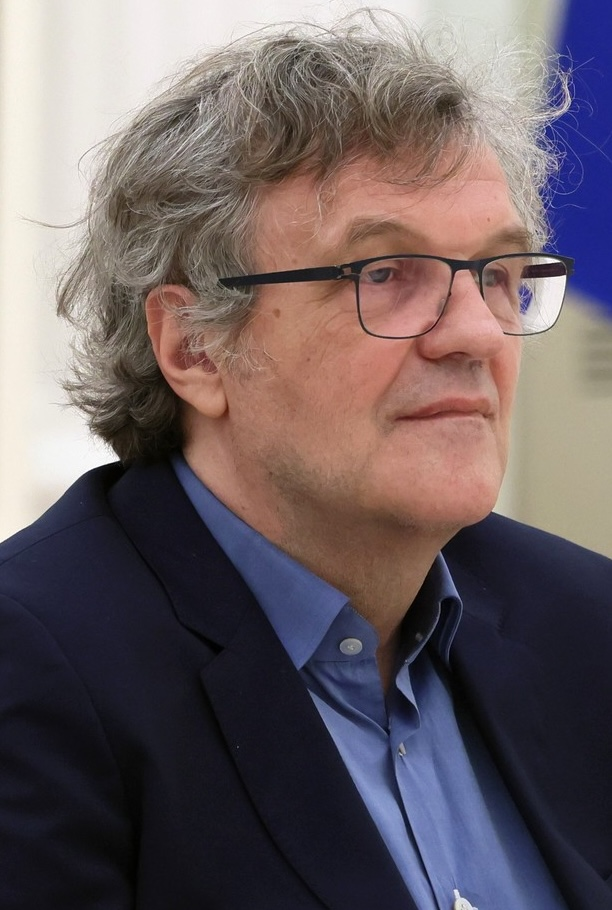
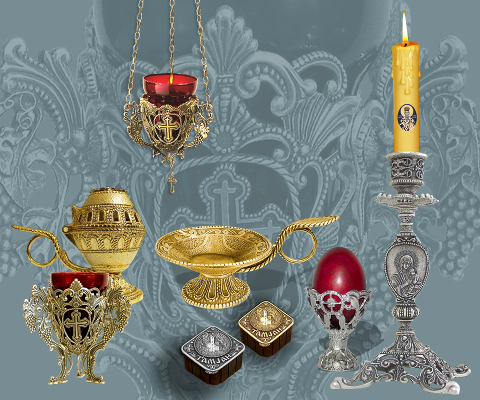
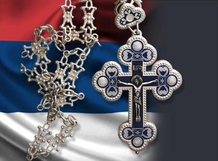

VIRTUELNI IDENTITET SRBA
Virtuelna izložba
Galerijski sadržaj, kulturni predmeti, znamenite ličnosti i interpretacije iz dostavljenog materijala.
14 cjelina iz izvornog dokumenta

Virtuelna izložba
Virtuelna izložba kao most između prošlosti i sadašnjosti
Pročitaj tekst Objavljeno: 23.09.2026.
Virtuelna izložba
Etnografska zbirka
Pročitaj tekst Objavljeno: 24.09.2026.
Virtuelna izložba
Bogorodica sa Hristom – medaljon
Pročitaj tekst Objavljeno: 25.09.2026.
Virtuelna izložba
Ogrlica amajlija – replika
Pročitaj tekst Objavljeno: 26.09.2026.
Virtuelna izložba
Prsten – XV vijek
Pročitaj tekst Objavljeno: 28.09.2026.
Virtuelna izložba
Nikola Tesla — naučnik i vizionar
Pročitaj tekst Objavljeno: 29.09.2026.
Virtuelna izložba
Mihajlo Pupin — naučnik i pronalazač
Pročitaj tekst Objavljeno: 30.09.2026.
Virtuelna izložba
Vuk Stefanović Karadžić — reformator jezika
Pročitaj tekst Objavljeno: 01.10.2026.Virtuelna izložba
Ivo Andrić — nobelovac u književnosti
Pročitaj tekst Objavljeno: 02.10.2026.
Virtuelna izložba
Duško Radović — pisac i aforističar
Pročitaj tekst Objavljeno: 03.10.2026.
Virtuelna izložba
Emir Kusturica — filmski reditelj
Pročitaj tekst Objavljeno: 05.10.2026.
Virtuelna izložba
Galerija predmeta i izabrani artikli
Pročitaj tekst Objavljeno: 06.10.2026.
Virtuelna izložba
Srpska tradicija – Šeli
Pročitaj tekst Objavljeno: 07.10.2026.Virtuelna izložba
Zaključak virtuelne izložbe
Pročitaj tekst Objavljeno: 08.10.2026.Nema rezultata za uneseni pojam.
Objavljeno: 08.10.2026.